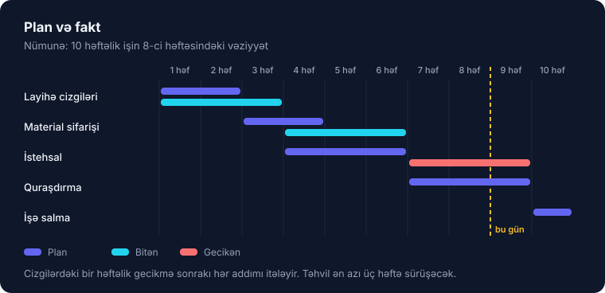
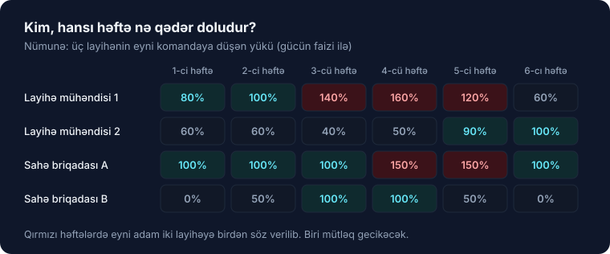

Layihələrin idarə edilməsi proqramı nə vaxt zəruri olur?
Mühəndislik, podrat və quraşdırma işi görən şirkətlərdə layihə planı çox vaxt işin əvvəlində bir dəfə hazırlanır. Excel-də gözəl bir qrafik çıxır, iclasda göstərilir, sonra bir qovluğa düşür və bir daha açılmır. İş yenə də gedir, çünki layihə rəhbəri hər şeyi yadında saxlayır. Eyni vaxtda üç-dörd iş getməyə başlayanda bu üsul həm adamı, həm şirkəti yorur.

Plan niyə rəfdə qalır?
Excel-dəki qrafiki aktual saxlamaq özü ayrıca bir işdir. Obyektdən xəbər gəlir, kimsə faylı açır, tarixləri sürüşdürür, yeni variantı e-poçtla hamıya göndərir. İki həftə sonra ortada dörd ayrı versiya gəzir və hansının düzgün olduğunu heç kim bilmir. Bir müddət sonra qrafiki yeniləyən adam da bu işi buraxır.
Bundan sonra layihənin vəziyyəti telefonla öyrənilir. Obyektdən "nə yerdəyik" deyə soruşulur, "sabah bitir" cavabı gəlir. Eyni cavab üç həftə gələ bilər, çünki işin neçə faizinin bitdiyi heç yerdə yazılmayıb.
Bunun müştəri tərəfində də əks-sədası var. Görülmüş işlərin aktı hazırlanacağı vaxt kimin nə qədər iş gördüyü, hansı materialın obyektə gətirildiyi, hansı əlavə işin müştəri ilə təsdiqləndiyi sənədlərdən yığılmağa çalışılır. Əskik çıxan hər sənəd fakturanın bir ay gecikməsi deməkdir.
Kiçik gecikmə necə böyüyür?
Layihədə işlər bir-birinə bağlıdır. Cizgilərin təsdiqi gecikəndə material sifarişi gecikir, material gec gələndə istehsal sürüşür, istehsal sürüşəndə quraşdırma briqadası boş gözləyir və ya başqa işə göndərilir. Əvvəldəki bir həftəlik sürüşmə təhvildə üç-dörd həftə olaraq qarşınıza çıxır.

Bu zəncirin özü qaçılmazdır, hər layihədə nəsə sürüşür. Problem sürüşmənin gec bilinməsidir. Plan aktual deyilsə, gecikməni təhvil tarixinə iki həftə qalmış öyrənirsiniz və o nöqtədə edə biləcəyiniz tək şey əlavə iş saatı yazıb müştəridən vaxt istəməkdir.
Eyni komanda, üç layihə
Orta ölçülü şirkətdə layihələrin sayı artdıqca əsas sıxlıq adamlarda yaranır. Eyni mühəndis üç layihədə cizgi çəkir, eyni briqada iki obyektə söz verilib. Hər layihə özlüyündə ağlabatan görünür, hamısını yan-yana qoyanda isə bəzi həftələrdə bir adamdan iki nəfərlik iş gözlənildiyi ortaya çıxır.

Bu cədvəli Excel-də aparmaq mümkündür, amma layihədəki hər dəyişiklikdə əllə yenidən hesablamaq lazımdır. Bunu heç kim etmir. Üst-üstə düşmə briqadanın obyektə gedə bilmədiyi gün bilinir.
Layihələrin idarə edilməsi proqramı nə edir?
Əsasən planı canlı saxlayır. İşlər, onların müddətləri və bir-birindən asılılıqları bir dəfə daxil edilir. Bir iş gecikəndə ona bağlı işlərin tarixi özü sürüşür və yeni təhvil tarixi dərhal görünür.
İşin gedişi obyektdən daxil edilir. Briqadir telefondan həmin gün görülən işi qeyd edir, foto əlavə edir, çatışmayan materialı yazır. Ofisdəki adam vəziyyəti öyrənmək üçün heç kimə zəng etmir.
Sənədlər layihənin altında toplanır: müqavilə, cizgilərin son variantı, müştəri ilə yazışmalar, təsdiqlənmiş əlavə işlər, təhvil-təslim aktları. Akt hazırlamaq vaxtı gələndə harada axtarmaq lazım olduğu bəllidir.
Nəhayət, bütün layihələr bir ekranda yan-yana durur. Hansı vaxtında gedir, hansı gecikir, hansı həftə kim artıq yüklənib, bir baxışda görürsünüz. Bu ekran olanda həftəlik iclasda vəziyyəti soruşmağa vaxt getmir, birbaşa nə ediləcəyi müzakirə olunur.
Hansı ölçüdə lazım olur?
Bir layihəsi olan beş nəfərlik komanda üçün yaxşı aparılan Excel faylı kifayətdir. Gördüyümüzə görə, bu hallarda kifayət etməməyə başlayır:
- Eyni vaxtda üçdən çox layihə gedirsə.
- Eyni adamlar və ya briqadalar bir neçə layihədə işləyirsə.
- Obyektdəki vəziyyəti öyrənməyin tək yolu zəng etməkdirsə.
- Görülmüş işlərin aktları sənədlər yığıla bilmədiyi üçün gecikirsə.
- Keçən il neçə layihənin gec təhvil verildiyini bilmirsinizsə.
Başlayarkən nəyə diqqət etməli
Ən çox edilən səhv ilk gündən hər təfərrüatı sistemə daxil etməyə çalışmaqdır. Üç yüz sətirlik iş siyahısını heç kim aktual saxlaya bilmir. Hər layihə üçün on beş-iyirmi əsas işlə başlayın, ehtiyac olduqca təfərrüatı artırarsınız.
İkincisi, obyektdən məlumat daxil etmək çox asan olmalıdır. Briqadirdən hər axşam kompüter arxasına keçməsini gözləyə bilməzsiniz. Telefonda iki toxunuşla daxil edilə bilməyən məlumat bir müddət sonra heç daxil edilmir.
Üçüncüsü, yeni layihədən başlayın. Yarısı bitmiş işi sistemə köçürmək zəhmətlidir və komandanı əvvəldən soyudur. Növbəti işi sistemdə açın, köhnələr öz qaydası ilə bitsin.
Hansı alətin seçiləcəyi bundan sonrakı qərardır. Hazır layihə idarəetmə alətləri var, ERP sistemlərinin layihə modulları var, şirkətə xüsusi yazılan həllər var. Biz əvvəlcə şirkətin layihəni necə apardığına baxır, aləti ona görə təklif edirik.
Tez-tez verilən suallar
Excel-də qrafikimiz var, niyə kifayət etmir?
Excel planı çəkmək üçün kifayətdir. Çətinlik planı aktual saxlamaqda və bir neçə layihəni eyni vaxtda görməkdədir. Fayl bir nəfərin kompüterində durduqca obyektdən gələn məlumat ona çatmır.
Sahə komandası telefondan məlumat daxil edəcəkmi?
Daxil etdiyi məlumat azdırsa və ekran sadədirsə, edəcək. Təcrübəmizdə ən asan öyrəşilən addım foto çəkib yükləməkdir, çünki komanda onsuz da foto çəkib WhatsApp-a atır.
Hazır alət, yoxsa şirkətə xüsusi proqram?
İşiniz standart axına yaxındırsa, hazır alət daha sürətli və ucuz başa gəlir. Görülmüş işlərin aktları, qiymət təklifi və anbarla əlaqə lazımdırsa və ya iş qaydanız özünəməxsusdursa, uyğunlaşdırılmış sistem daha uzunömürlü olur.
Əlaqəli xidmətlərimiz: mühəndislik və podrat şirkətləri üçün ERP, kiçik və orta biznes üçün ERP həlləri.
Layihələrinizə birlikdə baxaq
Davam edən bir layihənizi birlikdə nəzərdən keçirək, harada ilişdiyini görək.
Layihənizi müzakirə edək